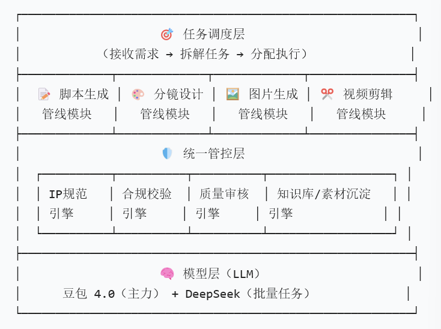

不接 API：适合探索
- 打开豆包、Kimi、ChatGPT，手动输入需求。
- 每次提示词靠人复制，版本靠人记忆。
- 适合头脑风暴、一次性文案、临时问答。
- 问题是不可批量、不可追踪、不可稳定复现。
只讲三件事：为什么要接 API，为什么要有 Harness，怎样用 Codex 把提示词、分镜、图片、视频和质检串成一条可复用流水线。
01 API 的本质
很多人以为 API 只是“程序员版 ChatGPT”。其实更准确的说法是：API 让 AI 从一个聊天窗口，变成你系统里的一个可调度能力。
适合一个人临时做一件事，快，但结果靠手感。
适合把同一套方法重复执行，批量、可记录、可复盘。
适合把品牌、角色、合规、素材、审批都管住。
02 三层架构
你给的图已经把核心讲清楚了：底部是模型，上面是统一管控层，再上面才是脚本、分镜、图片、视频这些产出模块。

03 自动化产出
复杂动画最容易失败的地方，是把脚本、分镜、角色、场景、运镜、文字、剪辑全塞进一个提示词。正确做法是拆开，每一步都留下可检查结果。
04 羊毛毡质感稳定
质感不稳定通常不是模型“不听话”，而是你没有把“角色身份、材质、镜头、负面方向、后期文字”拆清楚。
最终画面不要只靠文字生成。上传全身参考、脸部材质参考、成功样张，让模型跟图，不要让模型重新设计。
不要只在第一镜写“毛绒三花猫”。每一镜都写清同一个角色、同一材质、同一服装、同一表情边界。
AI 生成图像时尽量不要承担复杂中文。围裙 Logo 可留干净区域，最终用可控工具叠字。
基于上传参考图中的同一个角色，生成一张 9:16 竖屏关键帧。 角色必须保持：三花毛绒猫厨师，圆形白色大脸，头顶左侧黄色毛毡 patch，右侧棕色毛毡 patch，小黑豆眼，棕色小鼻子，简单微笑，粉色方形腮红，白色软厨师帽，棕色布料围裙，短绒毛、羊毛毡、手工缝线质感。 画面风格：暖黄微缩厨房，木质台面，浅景深，柔和商业广告灯光，干净、温暖、有食欲。 镜头内容：角色轻轻搅拌一锅咖喱，前景有干净诱人的咖喱饭，咖喱浓稠亮泽，米饭颗粒饱满，炸物酥脆，酱汁边缘干净。 不要生成除围裙品牌区以外的其它文字。围裙 Logo 如果无法准确生成，保留干净空白区域，后期叠加。 负向：不要真实猫，不要真人，不要其他动物，不要动漫大眼，不要塑料 3D，不要陶瓷质感，不要脏厨房，不要暗黑风，不要咖喱变成一坨不明物，不要乱码文字，不要多余肢体，不要夸张动作。
| 常见失败 | 原因 | 修法 |
|---|---|---|
| 羊毛毡变塑料 3D | 提示词只写“可爱吉祥物”，没有材质锁。 | 每镜写“短绒毛、羊毛毡、手工缝线、柔软布料”，负向写“不要塑料、陶瓷、金属、低质 3D”。 |
| 角色越生成越不像 | 模型把每张图当新角色设计。 | 用同一套参考图，提示词写“同一个角色，不重新设计，不改变物种、脸型、头顶色块和服装”。 |
| 咖喱没有食欲 | 只写“咖喱”，没写商业食物标准。 | 写“浓稠亮泽、边缘干净、米饭颗粒饱满、炸物酥脆、食材结构清楚”，拒绝泥状、剩菜、灰暗。 |
| 中文 Logo 乱码 | 图像模型不擅长稳定生成复杂文字。 | 不要让模型生成复杂文案。正式 Logo、门店数、活动信息在后期或设计工具里叠加。 |
05 伽喱博士 IP Harness 样例
对 IP 来说，Harness 不是提示词库，而是一份可执行的品牌质检标准。通过就进入下一步，不通过就重生成或人工修。
06 Codex 怎么用
给 Codex 的正确方式不是“帮我想一个提示词”，而是把规范、素材、失败样例放进工作区，让它按文件里的 Harness 产出、检查和迭代。
例如 `harness.md`、`ip-character-bible.md`、`visual-style-board.md`、`negative-directions.md`。这些比散落在聊天记录里的经验可靠。
让它读取规范、生成分镜、写提示词、整理 QA 表、更新失败原因，而不是只要一段灵感。
好图沉淀成参考图，坏图沉淀成负面方向，下次自动复用。
角色定稿、活动口径、Logo、门店数、合规承诺都应该人工确认，不让模型自己定。
读取 carry-doctor-ip-video/references 下的 Harness 和角色规范。为“伽喱博士 7 周年短片”生成 15 秒 5 镜头分镜，每镜头给画面、动作、运镜、后期文字和拒绝标准。
这组图里第 3 张变成塑料 3D，第 4 张咖喱像泥。请根据 negative-directions.md 改写每镜头提示词，并给一份重生成策略。
检查 assets 里的关键帧是否符合 harness.md。按角色一致性、食物食欲、文字安全、画面可剪辑性打分，指出必须重做的镜头。
把这次成功样例和失败样例总结成 6 条可复用规则，补充到 visual-style-board.md 和 negative-directions.md，不改动无关内容。
07 周日讲课节奏
听众不是来听概念名词的。建议每 8 到 10 分钟就回到一个具体例子：菜单图、短视频、角色漂移、Codex 实操。
08 可以直接带走的结论
这套讲法最后要落在一个清楚结论上：AI 的能力会越来越便宜，能把 AI 接进业务并管住的人会越来越值钱。
为了批量、自动、可记录、可复现，把 AI 从聊天工具变成生产系统的一部分。
为了统一 IP、风格、合规、质量和知识沉淀，让 AI 产出可控，而不是靠运气。
为了让 AI 不只回答问题，而是能在你的文件、规范和素材里持续执行、验证和迭代。
今天分享的核心内容，其实不仅仅是 Harness 的概念，也不仅仅是 AI 工具的用法，而是 AI 在这个时代真正能带来的能力升级。
人生不是“努力 A，就一定得到 B”的线性结算。真正影响结果的，是机会窗口、行业变化、合作网络、信息差、路径依赖、偶然事件，以及我们自己在压力下的判断质量。
所以高级能力不是追求一个确定答案，而是不断下注、观察反馈、修正模型。
人为什么会迷信、信风水？不是因为人缺乏理性，而是因为人在不确定中太需要确定性。人会本能地找模式、找因果、找控制感。
而且真实世界不像实验室，变量太多、反馈太慢、因果链太长。真正能被清楚证伪或证明的经验，其实很少。正因为很多事情既不能马上证明，也不能马上推翻，迷信才容易在这个缝隙里生长出来。
风水里有一部分其实是环境经验，比如采光、通风、动线、噪音、心理舒适度；但如果它变成完全不可验证的命运解释，就从经验变成了迷信。
遇到问题就问它一句，得到一个答案，然后把这个答案当真理。这种用法看起来很先进，但本质上很容易变成新时代迷信。
如果我们只是问 AI 一个答案，然后不看证据、不看置信度、不做验证，就等于把过去求签、问大师、看风水，换成了问 AI。
让它写文案、做图、剪视频、生成菜单、回复点评、整理日报、写代码、做自动化。这一层已经很有价值，因为它真的能提高效率，降低成本，让一个人完成过去几个人的工作量。
不是只让它给答案，而是让它列证据、标置信度、记录反馈、持续更新。Codex 负责执行，Harness 负责规则和质检，角色蒸馏负责理解身边的人和自己。数据越多，反馈越密，预测越准。
这一层的 AI，不只是帮你“做事更快”，而是帮你“判断更准”。它先改变你自己：让你更理解自己的决策模式、情绪模式、拖延模式、合作模式。然后再改变你的小世界：你的店、你的团队、你的 IP、你的客户关系、你的工作流。